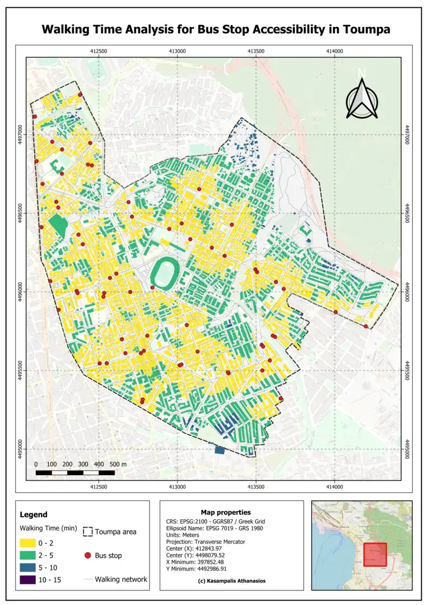
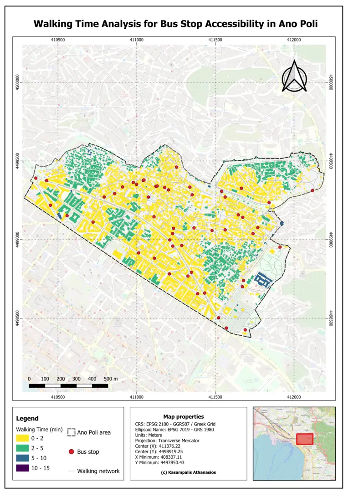

This project was designed to enhance the accessibility of public transportation in the neighborhoods of Toumpa and Ano Poli in Thessaloniki. The focus was on using geospatial data analysis to understand how easily people can walk to their nearest bus stops.
Limitations:
Future Directions:

